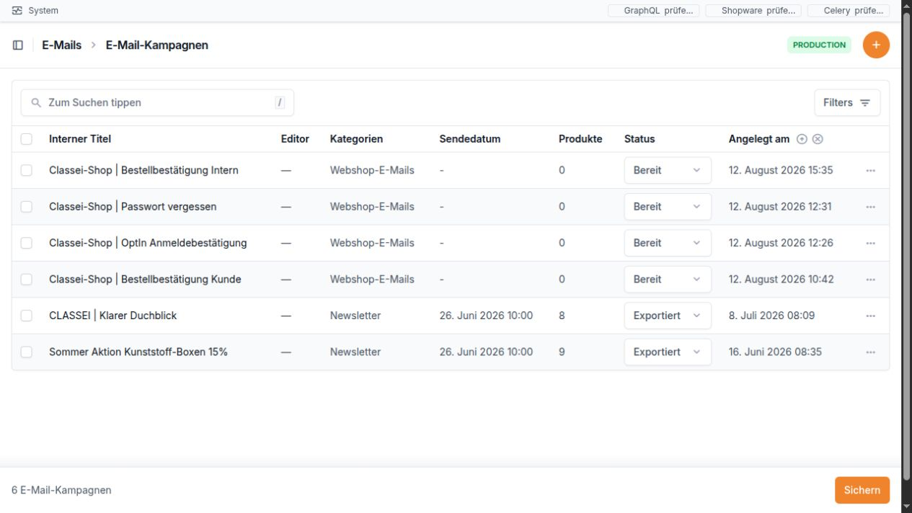

E-Mails¶
Wofür ist dieser Bereich da?¶
Im Bereich E-Mails erstellen Sie Newsletter-Kampagnen, gestalten deren Inhalt und ordnen sie den passenden Newsletter-Empfängern zu. Außerdem sehen Sie, welche E-Mails bereits für die weitere Verarbeitung vorbereitet wurden.
Der Bereich enthält fünf Menüpunkte:
Kampagnen – Newsletter anlegen, bearbeiten, gestalten und als HTML ausgeben.
Warteschlange – vorbereitete E-Mails je Empfänger prüfen.
Komponenten – wiederverwendbare Vorlagen-Bausteine verwalten. Dieser Punkt ist eher für geschulte Anwender gedacht.
Kategorien – Kampagnen mit einfachen Schlagworten ordnen.
Newsletter-Empfänger – Empfänger aus Shopware prüfen, mit Kunden verbinden und einer Kampagne zuordnen.


Die Kampagnenliste zeigt auf einen Blick, ob eine E-Mail noch ein Entwurf, bereit oder bereits exportiert ist.
Wichtig: Die hier geprüfte Funktion bereitet E-Mails vor und legt sie in die Warteschlange. Im untersuchten Bereich ist kein eigentlicher E-Mail-Versand zu sehen. Deshalb sollte das Handbuch nicht versprechen, dass eine E-Mail allein durch den Status „Bereit“ oder durch den Eintrag in der Warteschlange bereits versendet wurde.
Kampagnen¶
Die Kampagnenliste¶
Die Liste zeigt folgende Spalten:
Spalte |
Einfache Erklärung |
|---|---|
Interner Titel |
Name der Kampagne in der Bridge. Er wird nicht im eigentlichen E-Mail-Inhalt angezeigt. Beim Vorbereiten der E-Mail wird er zugleich als Betreff übernommen. |
Editor |
Bei Kampagnen mit einfachem Editor erscheint Öffnen. Ein Strich bedeutet, dass die Kampagne noch den älteren Komponenten-Aufbau verwendet. |
Kategorien |
Zeigt alle zugeordneten Kategorien. |
Sendedatum |
Geplanter Zeitpunkt der Kampagne. Das Datum allein versendet noch nichts. |
Produkte |
Anzahl der in dieser Kampagne verwendeten Produkte. |
Status |
Aktueller Arbeitsstand. Der Status kann direkt in der Liste geändert werden. |
Angelegt am |
Zeitpunkt, zu dem die Kampagne erstellt wurde. |
Sie können nach dem internen Titel suchen. Als Filter stehen Kategorien, Status, Sendedatum und Angelegt am zur Verfügung.
Je nach Berechtigung stehen an einem Eintrag auch Kopieren und Löschen zur Verfügung. Prüfen Sie bei einer Kopie besonders den Status, das Sendedatum, die Kategorien, die Produkte und die Texte. Diese Angaben können aus der Vorlage übernommen sein.
Status einer Kampagne¶
Status |
Bedeutung |
|---|---|
Entwurf |
Die Kampagne wird noch bearbeitet. Sie wird von der zeitgesteuerten Vorbereitung nicht berücksichtigt. |
Bereit |
Die Kampagne ist für die Vorbereitung freigegeben. Ist zusätzlich ein Sendedatum gesetzt und der Hintergrundlauf eingerichtet, können die zugeordneten aktiven Empfänger vor dem Termin in die Warteschlange gelegt werden. |
Exportiert |
Kennzeichnung für eine bereits ausgegebene Kampagne. Der HTML-Export setzt diesen Status nach aktuellem Stand nicht automatisch. |
Eine Kampagne anlegen oder bearbeiten¶
Im Formular Kampagne sehen Sie diese Felder:
Feld |
Einfache Erklärung |
|---|---|
Interner Titel |
Pflichtfeld für den Namen in der Bridge. Dieser Text wird beim Vorbereiten auch als Betreff verwendet. |
Kategorien |
Eine oder mehrere Kategorien zur besseren Ordnung. Die Auswahl bestimmt nicht die Empfänger. |
Status |
Entwurf, Bereit oder Exportiert. Arbeiten Sie zuerst mit Entwurf. |
Sendedatum |
Geplanter Zeitpunkt. Für die automatische Vorbereitung muss die Kampagne zusätzlich den Status Bereit haben. |
E-Mail gestalten |
Öffnet den einfachen Editor. Bei einer neuen Kampagne erscheint zunächst der Hinweis, dass sich der Editor nach dem Speichern öffnet. |
Unter Info stehen Hinweise zu persönlichen Empfänger- und Kundendaten, die in Vorlagen eingesetzt werden können. Dieser Teil ist vor allem für Vorlagen-Verantwortliche gedacht. Unter System sehen Sie Angelegt am und Aktualisiert am.
Nach dem ersten Speichern einer neuen Kampagne öffnet sich normalerweise automatisch der einfache Editor.
Der einfache E-Mail-Editor¶
Links bearbeiten Sie die Inhalte. Rechts sehen Sie die Vorschau der E-Mail. Änderungen werden nach einer kurzen Pause automatisch gespeichert. Die Anzeige oben wechselt dabei zwischen Ungespeicherte Änderung, Speichert …, Gespeichert, Vorschau wird erstellt … und Vorschau aktuell. Mit Vorschau aktualisieren können Sie die Vorschau zusätzlich von Hand neu laden.
Oben stehen außerdem:
← Kampagnen – zurück zur Kampagnenliste.
Kampagnendaten – zurück zu Titel, Kategorien, Status und Sendedatum.
Vorschau aktualisieren – baut die rechte Vorschau neu auf.
Kopfbereich und Titel¶
Feld |
Einfache Erklärung |
|---|---|
Bild-URL |
Internetadresse des Logos. Sie muss mit
|
Hauptüberschrift |
Große Überschrift am Anfang der E-Mail. |
Unterzeile |
Kürzerer Zusatz direkt unter der Hauptüberschrift. |
Begrüßung und Einleitung¶
Feld |
Einfache Erklärung |
|---|---|
Anrede vor dem Empfängernamen |
Text vor dem Namen, zum Beispiel „Hallo“. Der Name wird bei der Vorbereitung für den einzelnen Empfänger ergänzt. |
Einleitung |
Einleitender Text. Leerzeilen werden als getrennte Absätze dargestellt. |
In der Editor-Vorschau kann anstelle eines echten Empfängernamens ein Platzhalter erscheinen. In der persönlichen E-Mail wird der Name des gewählten Empfängers eingesetzt, soweit er vorhanden ist.
Produktauswahl¶
Feld oder Schaltfläche |
Einfache Erklärung |
|---|---|
Überschrift |
Überschrift über der gesamten Produktauswahl. |
Produkt hinzufügen |
Suche nach Artikelnummer oder Produktname. Geben Sie mindestens zwei Zeichen ein. Archivierte Produkte werden nicht angeboten. |
+ Zwischenüberschrift vor den Produkten |
Fügt einen eigenen Textblock vor dem ersten Produkt ein. |
Die Suche zeigt höchstens zwölf Treffer. Ein Klick auf einen Treffer nimmt das Produkt in die Kampagne auf und lädt den Editor neu.
Felder je Produkt¶
Feld oder Schaltfläche |
Einfache Erklärung |
|---|---|
↑ / ↓ |
Verschiebt das Produkt nach oben oder unten. |
Entfernen |
Entfernt das Produkt nach einer Sicherheitsfrage aus dieser Kampagne. Das Produkt selbst bleibt im Produktkatalog erhalten. |
Abschnittsüberschrift · optional |
Kleine Überschrift nur für diesen Produktabschnitt. |
Titel in der E-Mail |
Eigener Produktname für diese Kampagne. Bleibt das Feld leer, wird der Name aus dem Produktkatalog verwendet. |
Beschreibung |
Eigener Beschreibungstext. Bleibt das Feld leer, wird die Kurzbeschreibung aus dem Produktkatalog verwendet. |
Produktbilder · eine URL pro Zeile |
Eigene Bilder für diese
Kampagne. Jede Bildadresse muss
in einer neuen Zeile stehen und
mit |
Sonderpreis |
Auswahl zwischen Katalogpreis, Neuer Preis € und Rabatt %. |
Wert |
Betrag oder Prozentsatz passend zur Auswahl im Feld Sonderpreis. |
+ Zwischenüberschrift danach |
Fügt direkt nach diesem Produkt einen eigenen Zwischenblock ein. |
Preis und Rabatt gelten nur für diese Kampagne. Ein neuer Preis muss größer als 0 und kleiner als der Listenpreis sein. Ein Rabatt muss größer als 0 und kleiner als 100 Prozent sein. Neuer Preis und Rabatt können nicht gleichzeitig verwendet werden.
Zwischenüberschrift¶
Ein Zwischenblock kann vor der Produktliste oder nach einem bestimmten Produkt stehen.
Feld |
Einfache Erklärung |
|---|---|
Überschrift links |
Haupttext des Zwischenblocks. |
Text mittig · optional |
Zusätzlicher Text in der Mitte. |
Text rechts · optional |
Zusätzlicher Text auf der rechten Seite. |
Entfernen |
Löscht nur diesen Zwischenblock. |
Pro Kampagne sind höchstens 30 Zwischenüberschriften möglich.
Abschluss „Bestellung“¶
Feld |
Einfache Erklärung |
|---|---|
Überschrift |
Überschrift des Bestellbereichs. |
Bestellhinweis |
Kurze Erklärung, wie bestellt werden kann. |
Kontakttext rechts |
Kontaktmöglichkeit, zum Beispiel ein Telefonhinweis. |
Die Produktliste im Bestellbereich entsteht automatisch aus den ausgewählten Produkten.
Vorschau und Export¶
Öffnen Sie über Kampagnendaten wieder das normale Kampagnenformular. Rechts befindet sich der Bereich Export mit der Schaltfläche HTML kopieren. Sie öffnet ein großes Fenster mit:
HTML zum Kopieren,
MJML zum Kopieren,
Textversion zum Kopieren,
einer sichtbaren Vorschau,
den Schaltflächen HTML kopieren, MJML kopieren, Text kopieren und Schließen.
Für die Exportvorschau wird nach aktuellem Stand der zuletzt aktualisierte aktive Newsletter-Empfänger verwendet. Dadurch können echte persönliche Daten in der Vorschau erscheinen. Prüfen Sie Screenshots und Weitergaben deshalb sorgfältig.
Der Export ändert den Kampagnenstatus nicht automatisch. Setzen Sie Exportiert nur dann selbst, wenn dies zu Ihrem Arbeitsablauf gehört.
Kategorien¶
Kategorien helfen beim Sortieren und Filtern. Sie wählen keine Empfänger aus und verändern nicht den Inhalt.
Feld |
Einfache Erklärung |
|---|---|
Name |
Eindeutiger Name der Kategorie. Derselbe Name kann nicht zweimal angelegt werden. |
Angelegt am |
Wird automatisch gesetzt. |
Aktualisiert am |
Wird automatisch gesetzt. |
Die Liste zeigt Name, Angelegt am und Aktualisiert am. Sie können nach dem Namen suchen.
Warteschlange¶
Die Liste¶
Spalte |
Einfache Erklärung |
|---|---|
Zieladresse. |
|
Kampagne |
Verwendete Kampagne. |
Newsletter-Empfänger |
Zugehöriger Empfänger. |
Kunde |
Verbundener Kunde, falls vorhanden. |
Status |
Aktueller Stand des Eintrags. |
Eingereiht am |
Zeitpunkt der Vorbereitung. |
Gesendet am |
Versandzeitpunkt, sofern gesetzt. |
Sie können nach E-Mail-Adresse, Betreff, Kampagnentitel, Empfängername, ERP-/Adressnummer und Kundendaten suchen. Filter gibt es für Status, Kampagne, Eingereiht am und Gesendet am.
Felder im Eintrag¶
Feld |
Einfache Erklärung |
|---|---|
Kampagne |
Kampagne, aus der die E-Mail aufgebaut wurde. Nur lesbar. |
Newsletter-Empfänger |
Empfänger, für den die persönliche Fassung erstellt wurde. Nur lesbar. |
Kunde |
Verbundener Kunde, falls vorhanden. Nur lesbar. |
Zieladresse zum Zeitpunkt der Vorbereitung. Nur lesbar. |
|
Betreff |
Wird aus dem internen Kampagnentitel übernommen. Nur lesbar. |
Status |
Wartet, Wird gesendet, Gesendet, Fehler oder Abgebrochen. |
Eingereiht am |
Zeitpunkt der letzten Vorbereitung. Nur lesbar. |
Gesendet am |
Versandzeitpunkt, sofern bekannt. |
Fehlermeldung |
Beschreibung eines aufgetretenen Fehlers. |
Gerenderte HTML E-Mail |
Sichtbare Vorschau genau dieser vorbereiteten Empfängerfassung. Nur lesbar. |
Angelegt am / Aktualisiert am |
Systemzeiten der Bridge. Nur lesbar. |
Ein Eintrag mit Wartet ist vorbereitet, aber damit noch nicht nachweislich versendet. Verwenden Sie Gesendet nur zusammen mit einem bestätigten Versandablauf.
Komponenten – nur für Vorlagen-Verantwortliche¶
Komponenten sind wiederverwendbare Bausteine für ältere oder besondere Kampagnen. Neue Kampagnen verwenden normalerweise den einfachen Editor.
Die Liste zeigt Name, Rendering-Modus, Platzierung, Standard und Reihenfolge. Nach Name kann gesucht werden. Die Liste kann nach Modus, Platzierung und Standard gefiltert werden. Standard und Reihenfolge lassen sich direkt in der Liste ändern.
Feld |
Einfache Erklärung |
|---|---|
Name |
Name des Vorlagen-Bausteins. |
Platzierung |
Kopfbereich oder Inhaltsbereich. |
Standard |
Ist dies aktiv, kann der Baustein bei passenden älteren Kampagnen automatisch eingesetzt werden. |
Reihenfolge |
Position des Bausteins. |
Rendering-Modus |
Legt fest, ob die Bridge die Platzhalter verarbeitet oder den Baustein unverändert an Shopware weitergibt. Nur nach Vorgabe ändern. |
MJML-Markup |
Vorlageninhalt des Bausteins. Nur für geschulte Anwender. |
Standard-Variablen |
Grundwerte für die Platzhalter des Bausteins. Muss als Schlüssel-Wert-Liste im angezeigten Editor gepflegt werden. |
Komponenten-Info |
Zeigt, welche Unterbausteine sowie Produkt-, Empfänger- und Kundendaten verwendet werden können. |
Angelegt am / Aktualisiert am |
Systemzeiten der Bridge. Nur lesbar. |
Ein ungültiger Vorlagentext wird beim Speichern mit Zeilennummer gemeldet. Ändern Sie Komponenten nur, wenn klar ist, welche Kampagnen sie verwenden.
Ältere Kampagnen mit Komponenten¶
Bei einer älteren Kampagne kann statt des einfachen Editors eine Liste von Bausteinen im Kampagnenformular erscheinen. Dort gibt es je Baustein:
Feld |
Einfache Erklärung |
|---|---|
Baum |
Zeigt Reihenfolge und Einrückung des Bausteins. |
Reihenfolge |
Position innerhalb der Kampagne. |
Titel |
Eigener Name für diesen Baustein. |
Bibliotheks-Komponente |
Gewählte Vorlage. |
Variablen |
Abweichende Texte oder Werte für diese Kampagne. Nicht gesetzte Werte kommen aus der Vorlage. |
Übergeordnete Komponente |
Ordnet den Baustein unter einem anderen Baustein ein. |
Aktiviert |
Bestimmt, ob der Baustein ausgegeben wird. |
Produkt |
Optional verbundenes Produkt. |
Aktueller Preis |
Nur lesbare Preisanzeige des verbundenen Produkts. |
Komponenten-Info |
Zeigt Standardwerte und Hinweise zur Einordnung. |
Wenn in der Spalte Editor ein Strich steht, handelt es sich wahrscheinlich um eine solche Komponenten-Kampagne.
Häufige Hinweise und Fehlerquellen¶
Die Vorschau ändert sich nicht: Warten Sie kurz auf Gespeichert und Vorschau aktuell oder klicken Sie auf Vorschau aktualisieren.
Ein Bild erscheint nicht: Prüfen Sie, ob die Adresse vollständig ist und mit
http://oderhttps://beginnt. Bei Produktbildern muss jede Adresse in einer eigenen Zeile stehen.Ein Produkt wird nicht gefunden: Geben Sie mindestens zwei Zeichen ein. Suchen Sie nach Artikelnummer oder Name. Archivierte Produkte fehlen absichtlich.
Ein Sonderpreis wird abgelehnt: Der Wert muss größer als 0 und kleiner als der Listenpreis sein. Ein Rabatt muss unter 100 Prozent liegen.
Eine Kampagne landet nicht automatisch in der Warteschlange: Prüfen Sie Status Bereit, Sendedatum, Empfängerzuordnung und ob der Hintergrundlauf eingerichtet ist. Standardmäßig sucht dieser Lauf ungefähr einen Tag vor dem Sendedatum in einem Zeitfenster nach passenden Kampagnen.
Ein Empfänger kann nicht vorbereitet werden: Häufig fehlt die ausgewählte Kampagne, die E-Mail-Adresse, ein aktiver Status oder der Eintrag wurde in Shopware nicht mehr gefunden.
Der Name fehlt in der E-Mail: Prüfen Sie Vorname, Nachname und Anrede beim Empfänger sowie den letzten Shopware-Abgleich.
Die falsche Kampagne wird vorbereitet: Die Kategorie einer Kampagne wählt keine Empfänger aus. Entscheidend ist das Feld Ausgewählte E-Mail-Kampagne am Empfänger.
Eine erneute Vorbereitung erzeugt keinen zweiten Eintrag: Für dieselbe Kampagne und denselben Empfänger wird der bestehende Eintrag aktualisiert.
Exportiert wurde nicht automatisch gesetzt: Der HTML-Export ändert den Status nicht.
Persönliche Daten in Vorschau oder Screenshot: Export und Warteschlangen-Vorschau können Namen, Adresse oder Kundendaten enthalten. Vor Weitergabe bitte anonymisieren.
Praxisbeispiel 1: Eine Produktaktion erstellen und als HTML prüfen¶
Ziel: Eine neue Kampagne mit zwei Produkten, einer eigenen Einleitung und einem Rabatt vorbereiten.
Öffnen Sie E-Mails → Kampagnen und wählen Sie Hinzufügen.
Tragen Sie bei Interner Titel „Herbstaktion Ordnungsmappen“ ein.
Wählen Sie eine passende Kategorie und lassen Sie den Status zunächst auf Entwurf.
Speichern Sie. Der einfache Editor öffnet sich.
Tragen Sie eine Hauptüberschrift, eine Unterzeile, die Anrede und die Einleitung ein.
Suchen Sie im Feld Produkt hinzufügen nach der ersten Artikelnummer und klicken Sie auf den Treffer. Wiederholen Sie den Schritt für das zweite Produkt.
Verwenden Sie ↑ und ↓, bis die Produkte in der gewünschten Reihenfolge stehen.
Geben Sie beim ersten Produkt einen eigenen Titel in der E-Mail und eine kurze Beschreibung ein.
Wählen Sie beim zweiten Produkt Rabatt % und tragen Sie
15ein. Prüfen Sie, ob in der Vorschau der erwartete Preis erscheint.Fügen Sie nach dem ersten Produkt eine Zwischenüberschrift ein. Tragen Sie links einen kurzen Titel und rechts einen Telefonhinweis ein.
Warten Sie, bis oben Gespeichert und Vorschau aktuell steht.
Öffnen Sie Kampagnendaten. Kontrollieren Sie Titel, Kategorie, Status und gegebenenfalls das Sendedatum.
Klicken Sie rechts auf HTML kopieren. Prüfen Sie die Vorschau und kopieren Sie die benötigte Fassung.
Setzen Sie den Status erst dann auf Bereit, wenn Inhalt, Preise, Links und Empfängerzuordnung geprüft sind.
Erwartetes Ergebnis: Die Kampagne ist gespeichert, enthält zwei Produkte in richtiger Reihenfolge, zeigt den Rabatt nur in dieser Kampagne und kann als HTML, Vorlagentext oder reine Textfassung kopiert werden.
Praxisbeispiel 2: Empfänger zuordnen und die persönliche Fassung kontrollieren¶
Ziel: Eine fertige Kampagne für aktive Empfänger vorbereiten und Fehler in der Warteschlange prüfen.
Öffnen Sie E-Mails → Newsletter-Empfänger.
Starten Sie Newsletter-Empfänger von Shopware synchronisieren und lesen Sie die Abschlussmeldung.
Falls Empfänger trotz vorhandener ERP-/Adressnummer nicht als Kunde erkannt werden, verwenden Sie Kundenzuordnungen aus AdrNr neu aufbauen.
Filtern Sie auf aktive Empfänger. Geeignet sind Bestätigt und Direkt aktiv.
Öffnen Sie den ersten Empfänger. Prüfen Sie E-Mail-Adresse, Status, In Shopware vorhanden und die Kundenverknüpfung.
Wählen Sie bei Ausgewählte E-Mail-Kampagne die fertige Kampagne und speichern Sie.
Klicken Sie auf Ausgewählte Kampagne in Warteschlange legen.
Wiederholen Sie die Zuordnung bei weiteren Empfängern oder markieren Sie mehrere vorbereitete Empfänger in der Liste und verwenden Sie die Sammelaktion.
Achten Sie auf die Rückmeldung. Bei einem Fehler nennt die Bridge Empfänger und Ursache.
Öffnen Sie E-Mails → Warteschlange und filtern Sie auf die Kampagne.
Öffnen Sie einen Eintrag. Kontrollieren Sie E-Mail-Adresse, Betreff, Status und die Gerenderte HTML E-Mail. Prüfen Sie besonders Anrede, Name, Produkttexte, Preise und Bilddarstellung.
Ein Status Wartet bedeutet nur, dass die persönliche Fassung vorbereitet wurde. Klären Sie über den vorgesehenen Versandablauf, wann sie tatsächlich gesendet wird.
Erwartetes Ergebnis: Für jeden geeigneten Empfänger liegt genau ein aktueller Warteschlangen-Eintrag mit persönlicher Vorschau vor. Nicht aktive oder in Shopware fehlende Empfänger werden mit verständlicher Meldung abgewiesen.